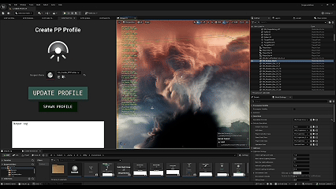

Lighting Manager
Sistema centralizado para gerenciamento, zoneamento e transição dinâmica de perfis de iluminação e pós-processamento orientado a DataAssets. Centralized DataAsset-driven system for managing, zoning, and dynamically transitioning lighting profiles and post-processing.

Como Funciona & Lógica da Arquitetura How It Works & Architectural Logic
1. Centralização de Dados (DataAsset de Iluminação) 1. Data Centralization (Lighting DataAsset)
Todas as propriedades de iluminação e pós-processamento — como parâmetros de Sky Light, iluminação direcional, parâmetros de Post-Process (ex: exposição, color grading, bloom) e efeitos atmosféricos — são encapsuladas em um DataAsset. Isso permite criar e reutilizar diferentes "perfis" de ambiente (ex: biomas, dia/noite, cavernas ou dungeons) de forma organizada e sem dependência de lógica hardcoded. All lighting and post-processing properties—such as Sky Light settings, directional light, post-process parameters (e.g., exposure, color grading, bloom), and atmospheric effects—are encapsulated in a DataAsset. This allows creating and reusing distinct environment profiles (e.g., biomes, day/night, caves, dungeons) in an organized way without hardcoded logic.
2. Ator de Volume / Zoneamento de Ambiente 2. Volume Actors / Environmental Zoning
Atores colocados no nível (Lighting/Atmosphere Triggers) definem qual perfil de iluminação deve ser aplicado a cada zona do mapa. Ao entrar ou sair de uma determinada área, o sistema lê as informações do DataAsset associado e realiza uma transição suave (blend) dos parâmetros visuais. Level-placed triggers define which lighting profile applies to each map zone. When entering or leaving an area, the system reads the corresponding DataAsset data and smoothly blends visual parameters.
3. Sincronização Multiplayer (Server & Client Consistency) 3. Multiplayer Synchronization (Server & Client Consistency)
Garante que o estado de iluminação e atmosfera esteja perfeitamente alinhado entre o Servidor e todos os Clientes conectados. Mudanças climáticas, avanços de horário ou transições entre áreas são replicados ou calculados deterministicamente, assegurando uma experiência visual idêntica para todos os jogadores sem divergências de visibilidade. Ensures lighting and atmosphere states stay fully aligned between Server and connected Clients. Weather changes, time-of-day progression, or area transitions are replicated or calculated deterministically, guaranteeing identical visual experiences without visibility discrepancies.
Destaques de Produção & Otimização Production & Optimization Highlights
- Flexibilidade para Artistas (Artist-Friendly Workflow): Artist-Friendly Workflow: Permite que a equipe de Lighting e Environment Artists ajuste o visual do jogo criando e modificando DataAssets no Editor em tempo real, sem necessidade de reconfigurar volumes ou atores individualmente na cena. Allows lighting and environment artists to adjust game visuals in real-time by editing DataAssets in the Editor, avoiding individual actor/volume reconfigurations.
- Transições Suaves e Performance: Smooth Transitions & High Performance: Utiliza interpolação dinâmica de parâmetros para evitar trocas bruscas de iluminação, mantendo baixo custo de processamento por aplicar alterações em propriedades já existentes da Engine em vez de re-instanciar componentes pesados. Employs dynamic parameter interpolation to prevent jarring visual pops while maintaining minimal CPU/GPU overhead by modifying existing Engine properties rather than re-instantiating heavy components.